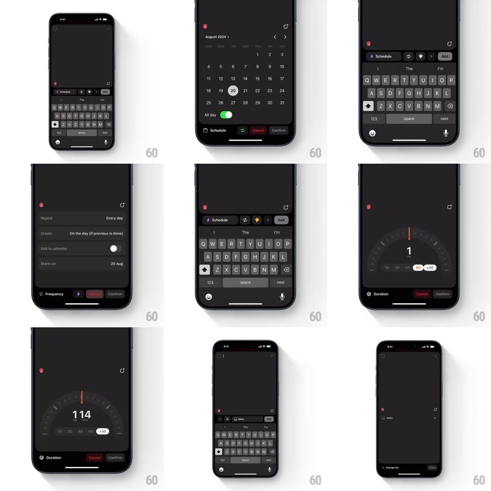

Media
Frame-by-frame

Rebuild this interaction 1:1: Amie's todo creation flow - an inline quick-add bar with Schedule / recurrence / Add chips, a month-grid date picker with an All-day toggle and Cancel/Confirm, a Repeat frequency sheet, and a rotary duration dial you spin to values like 17 or 118 minutes.

Rebuild this interaction 1:1: Amie's todo creation flow - an inline quick-add bar with Schedule / recurrence / Add chips, a month-grid date picker with an All-day toggle and Cancel/Confirm, a Repeat frequency sheet, and a rotary duration dial you spin to values like 17 or 118 minutes.
## Integration
Integration: stack-agnostic spec - springs given as stiffness/damping, timed motions as duration + curve; map every value to your framework and animation library of choice.
## Scene
Dark task UI. Quick-add bar: text field with "Schedule", recurrence, and "Add" chips. Date sheet: "August 2024" month grid, selected day circled, "All day" toggle, Cancel / Confirm pills. Repeat sheet: Repeat "Every day", "On the day (if previous is done)", "Add to calendar" toggle, "Starts on" row. Duration sheet: a semicircular rotary dial with a big number ("17") and quick chips (15, 30, 45, 60, +30), Duration / Cancel / Confirm below.
## Motion spec
Pattern: stacked spring sheets with a rotary dial finale.
- Each sub-sheet springs up from the quick-add bar (spring ~330/22), the previous layer dimming and sinking 4% - a visible stack of depth.
- Date grid: tapping a day moves the selection circle with a slide (spring ~400/22) rather than a cut; Confirm/Cancel dip on press and drop the sheet.
- The duration dial: dragging rotates the dial 1:1 around its center, the number rolling live and a tick haptic every 5 units; flinging spins it with momentum, easing to a stop (deceleration ~0.94/frame); quick chips snap the dial with a spring (~300/18).
- Confirm collapses the whole stack back to the quick-add bar in one chained motion (each sheet dropping 80ms after the one above it).
## Calibration
- The dial's number is the largest type on the sheet (~56px) - the value is the interface.
- Every sheet carries both Cancel and Confirm - escape is always symmetric.
## Reduced motion
Sheets fade; dial sets value on release without momentum.
## Don't miss
- The rotary dial is skeuomorphic on purpose - it should feel like spinning hardware, ticks and momentum included.
- Sheet stacking keeps the breadcrumb of context: date sits above todo, duration above both.